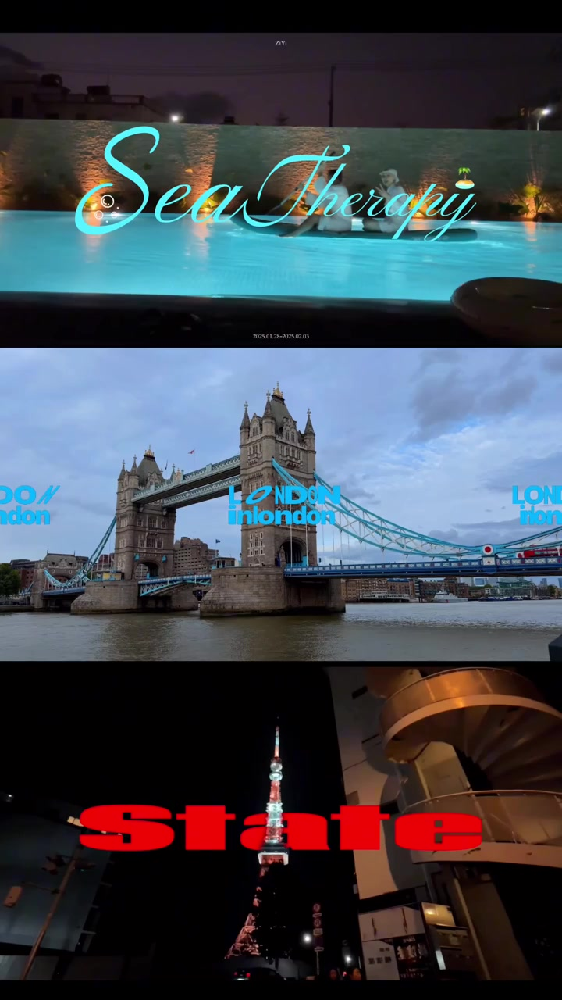
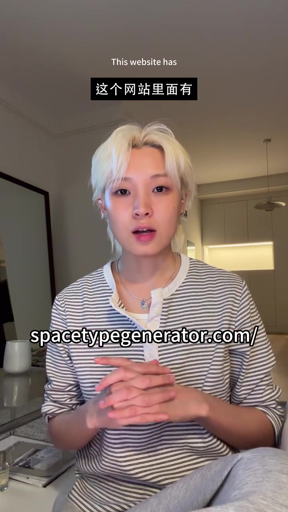
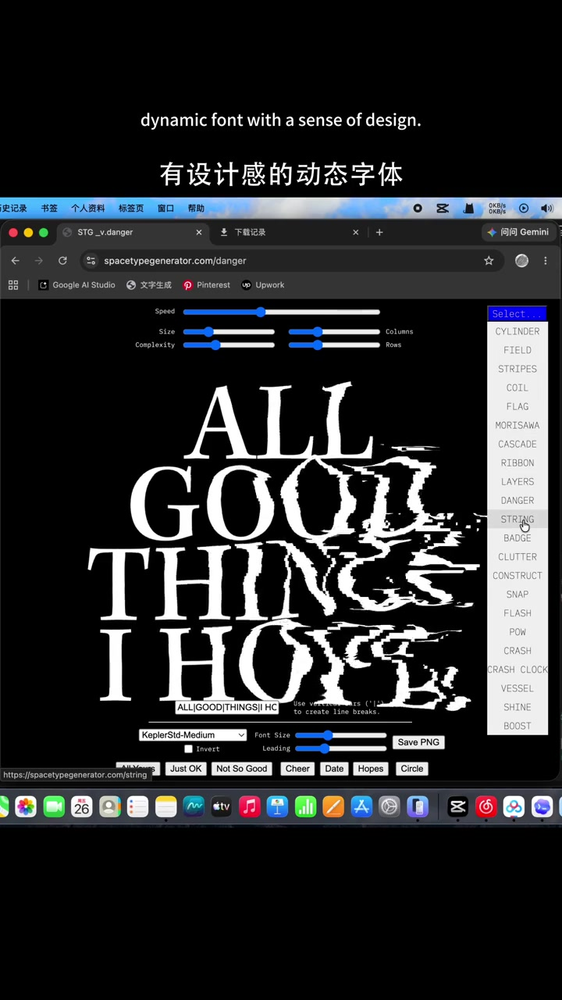
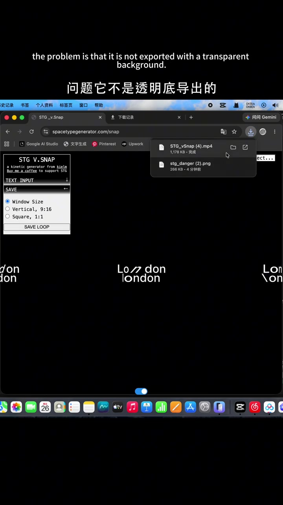
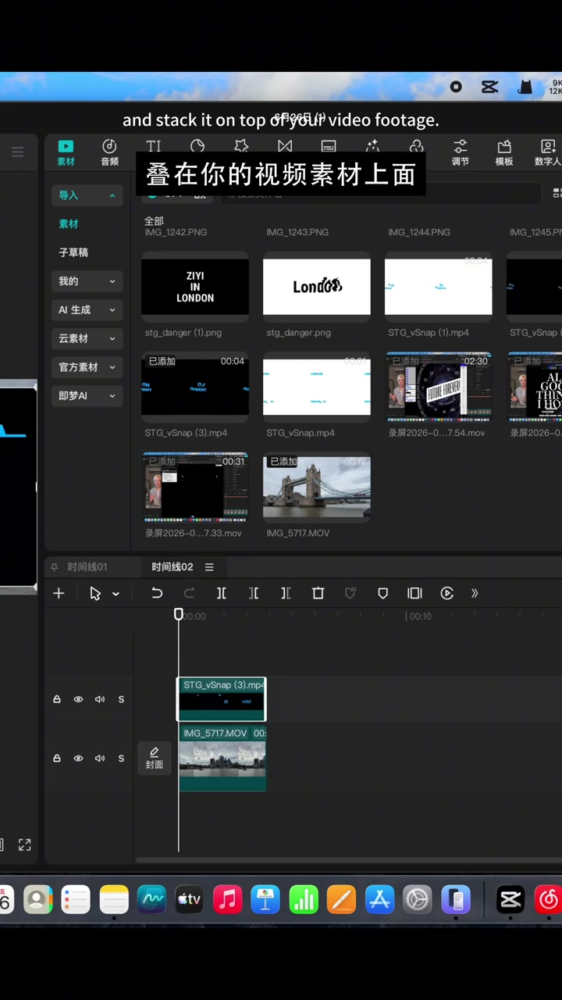
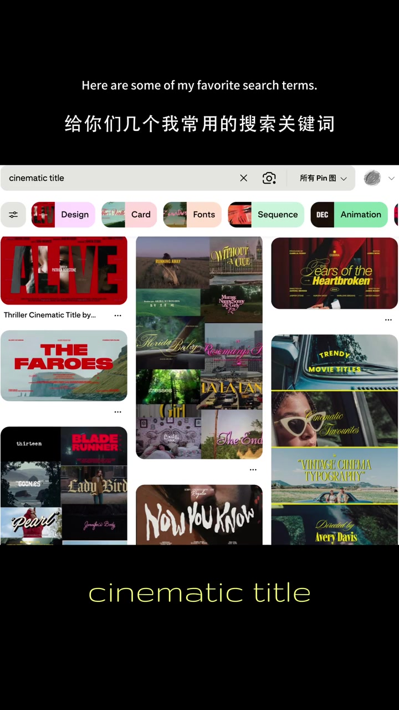
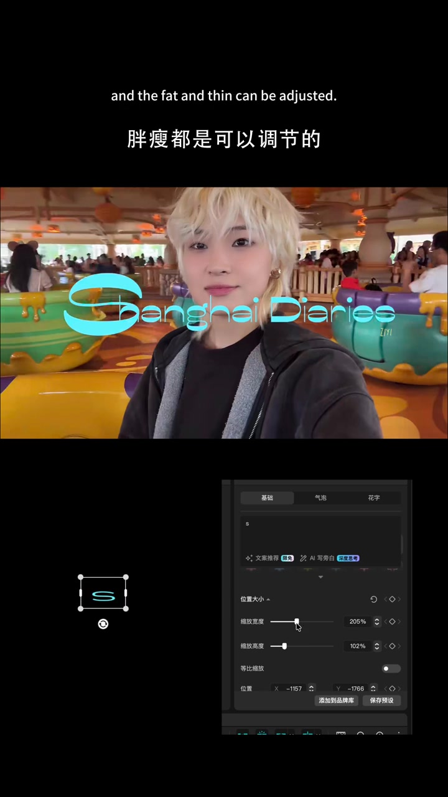
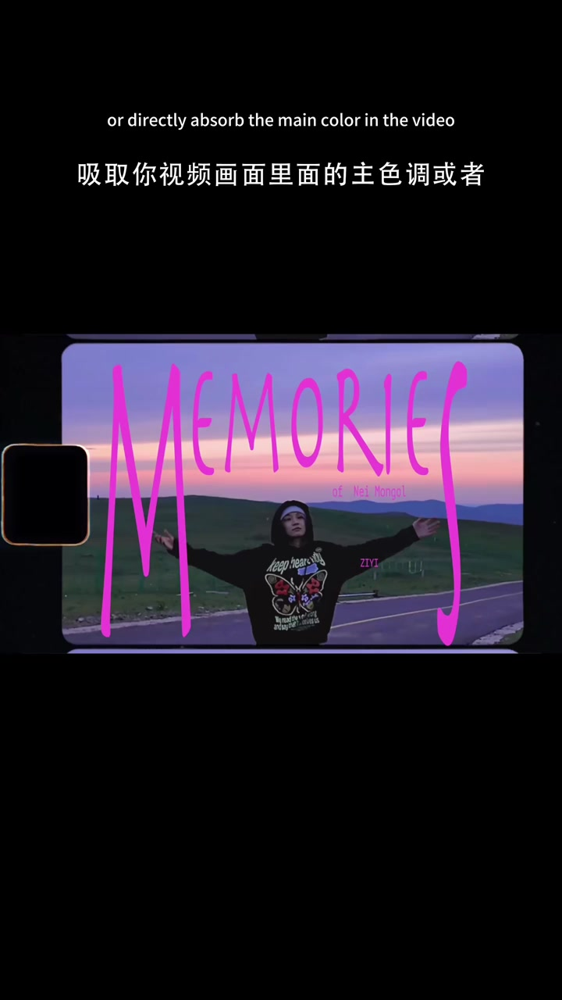

开场先甩出一组电影感片头样本
UP 主 ZiYi 开场直接回应「很多人问我 vlog 开头的字体设计」，并预告要分享三个私藏字体神器。画面先叠出旅行片头样例：泳池夜景上的手写「Sea Therapy」、伦敦塔桥上的重复「LONDON」、东京塔旁的大字「State」——先把「电影感」长什么样亮出来，再进工具教学。
口播大意：「今天我跟大家分享三个我自己私藏的字体神器，让你的 vlog 开头提升质感。」

第一个神器：Space Type Generator
画面中央直接打出网址 spacetypegenerator.com。UP 主演示：站点里有大量动态效果，输入想要的文字后会生成多种有设计感的动态字体，挑喜欢的即可。静态可直接保存；动态则用网页自带的导出功能下载。
画面字幕：「这个网站里面有特别多不同的效果 / 有设计感的动态字体」
说明：Whisper 把「就行」听成「用戏」。下文以可见字幕与界面为准；末尾转录区仍保留原始分段。


导出不是透明底：黑白底 + 剪映色度抠图
UP 主立刻补上坑点：导出往往不是透明底。她的做法是把导出底设成纯黑或纯白，再把视频拖进剪映，叠在素材上方，用色度抠图（绿色/色度）把动态字完整抠下来。
画面字幕：「问题它不是透明底导出的」；口播：「选择绿色或者选择色度抠图」
Whisper 将「剪映」识别为「剪印」。界面截图可见剪映时间线与 STG_vSnap 素材叠层。


第二个不是工具而是方法：Pinterest 刷审美
UP 主强调：前面那些字体灵感从哪来？答案是 Pinterest。没灵感时就在上面刷；她给出常用搜索关键词示例，画面里演示搜「cinematic title」，下面还能看到 Design / Card / Fonts / Sequence / Animation 等过滤标签。结论是看多了、积累多了，自然能用到自己的 vlog 里。
画面字幕：「给你几个我常用的搜索关键词」；搜索框示例：cinematic title

技巧一：一个标题混两套字体，调大小胖瘦
第一个小技巧：同一个标题不要只用一种字体。例如「Shanghai」与「Diaries」用不同字体拼在一起，再分别调大小、高低、胖瘦，封面就会更独特，别人也难直接搜到同款。
画面字幕：「我不会只用一个字体」「胖瘦都是可以调节的」
Whisper 把「胖瘦」听成「烫手」。界面可见缩放宽度 205%、高度 102% 的非等比调节。

技巧二：新建复合片段，再叠颗粒感/复古滤镜
字体排版完成后，UP 主习惯新建复合片段，再加颗粒感或复古滤镜，让标题更贴合视频本身的色调与质感，而不是漂在画面上的「干净贴纸」。
画面字幕：「我会把它新建复合片段」
技巧三：颜色别乱选，吸取画面主色或互补色
第三个技巧：字体颜色直接吸取视频画面主色调，或用反差互补色。示范画面是内蒙古公路黄昏，「MEMORIES」用亮粉洋红压在紫粉色天空上，层次一下就出来。收尾照例提醒点赞收藏。
画面字幕：「吸取你视频画面里面的主色调」；「增加画面的层次感」
Whisper 将「吸取」「主色调」「抓住」分别听成「需求」「组色调」「瞅瞅」。叙述以双语字幕为准。
